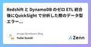
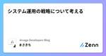

Arsaga Developers Blogのフィード
https://zenn.dev/p/arsaga
アルサーガパートナーズ株式会社のエンジニアによるテックブログです
フィード

Redshift と DynamoDB のゼロ ETL 統合後にQuickSight で分析した際のデータ型エラーへの対応
Arsaga Developers Blogのフィード
事象DynamoDB のデータを Zero-ETL を利用して Redshift に連携し QuickSight で分析しようとしたところ、「サポートされていないデータ型」のため取り込まれませんでした。 原因DynamoDBの「DynamoDB JSON」データをRedshiftに連携させると、SUPER型としてマッピングされ、QuickSightはSUPER型に対応しておらず、取り込みに失敗していました。 対策 マテリアライズドビューによる構造化JSON 内の要素をそれぞれ抽出し、Redshift 上の適切なデータ型にキャストし、マテリアライズドビューを作成しま...
1日前
Amazon Redshift と Aurora PostgreSQL のゼロ ETL 統合時に発生したカラム長によるエラーへの対応
Arsaga Developers Blogのフィード
事象Aurora PostgreSQL と Amazon Redshift のゼロ ETL 統合によるデータ同期中、一部テーブルで以下のエラーメッセージが出力し、初回レプリケーションが失敗しました。Replicating initial data for table "<schema>"."<table>" failed. Column '<column>' length XXXX is longer than in the table YYYY. Check the data that might be causing issues. I...
1日前
Redshift Serverless と Aurora PostgreSQL のゼロ ETL 統合を試してみた
Arsaga Developers Blogのフィード
はじめに2024 年 10 月 15 日、以下 2 つの発表がありました。Amazon Aurora PostgreSQL と Amazon Redshift のゼロ ETL 統合が一般提供開始Amazon Aurora PostgreSQL zero-ETL integration with Amazon Redshift now generally available - AWSAmazon DynamoDB と Amazon Redshift のゼロ ETL 統合が一般提供開始AWS announces general availability of Amaz...
1日前

システム運用の戦略について考える
Arsaga Developers Blogのフィード
はじめに今回は、これまでのプロジェクトの経験を通して、システム運用の観点から学んだこと大切だと思ったことについて記事にしていきたいと思います。 初期段階で設計思想を統一するプロジェクトの機能やサービスごとに設計思想が異なっている合、何らかの追加要望や修正が発生すると、サービスごとに変更する箇所を洗い出し方針を考える必要があります。設計の違いによって確認範囲が膨大になり、考慮漏れによる追加実装が発生するリスクも高まります。ある機能のデータ取得処理がAサービスではREST API、BサービスではGraphQLで実装されているAサービスとBサービスでStoreの処理や取得方...
3日前
GitHub Copilotを持っているならvscode-mermAIdを試そう 204
204
Arsaga Developers Blogのフィード
はじめにプログラマやドキュメント作成者にとって、図は複雑な概念を説明する上で欠かせないツールです。しかし、図の作成は煩雑で時間がかかるものです。Microsoftが開発した「mermAId」というVS Code拡張機能を使うことで、一瞬で図を作ることができるようになります。というわけで、実務で使ってみたので、その使い方をご紹介したいと思います。 Mermaidとは紛らわしいのですが、Mermaidはテキストベースでフローチャートやシーケンス図などを描けるJavaScriptライブラリです。一方、mermAIdはそのMermaid記法をCopilotを使って自動生成・編集できる...
14日前

リトライ処理時のExponential Backoff（指数関数バックオフ）戦略
Arsaga Developers Blogのフィード
はじめにGoogle Drive APIについて調べていたところ、使用制限の箇所で指数バックオフアルゴリズムに関する記述がありました。https://developers.google.com/workspace/drive/labels/limits?hl=ja自分が初めてエンジニアになった頃に、あるエンジニアがAngulerのRxJSを使用して指数バックオフを作成していたことがあり、その時はあまり理解できていなかったので、改めて調べてみることにしました。 Exponential Backoff（指数関数バックオフ）とは指数バックオフとは、通信に失敗した際に、待ち時間...
17日前
質問の仕方について（新入社員向け）
Arsaga Developers Blogのフィード
これはなに？社内の新入社員向けに書いた、先輩や生成AIに対してどのような質問をすればよいかをまとめた記事になります。 原則大雑把なものから細かいものへと順番に現状を説明しましょう。いきなり細かい話をしてもなかなか理解されません。特に質問が苦手だと思う人は、大雑把すぎるくらいの話から始めてください。ちょうどマトリョーシカを開けるかのごとく、大きな話から小さな話をするように心がけましょう。こちらが一言話しかけた際には相手の表情や返事を確認しましょう。よく分かっていなさそうであれば、話の細かさが合っていないか、話の切り口を間違えています。あるいは話しかけた相手が忙しいパターン...
1ヶ月前
生成AI時代における新人教育について考えたこと
Arsaga Developers Blogのフィード
従来通りのことをやっていては教育にならない時代2025年を迎え、世は生成AI時代となり様々なツールが出ています。それに比べて、開発現場の教育環境はそれに見合ったアップデートがされていないような気がします。今や「TODOアプリを作って動かしてみよう」のようなお題では、生成AIを使えばすぐにできてしまいます。従来通りのことをやっていては、通用しない時代と言えるでしょう。では、どうすれば良いのか、実際にやってみたことを含めて共有したいと思います。 複雑なアプリを作ってもらう簡単なアプリを作ってもらっても教育にならないのであれば、ある程度複雑なアプリを作ってもらうほうが良いです。ま...
4ヶ月前
【MacOS・LaunchAgent】ログイン時にスクリプトを実行する
Arsaga Developers Blogのフィード
はじめに業務中に毎回、SQLクエリを叩く作業があり、PCのログイン時に処理が実行され、結果が自動で表示されたら便利だと思ったので、色々と調べて実行してみることにしました。今回はLaunchAgentという方法を使用して、実装していきたいと思います。 Launch AgentについてLaunchAgentはmacOSのlaunchdで管理されるプロセスの一種です。ユーザーがログインしたときにロードされる為、この仕組を利用してユーザーログイン時にスクリプトを実行が可能となります。https://developer.apple.com/library/archive/docum...
5ヶ月前
Databricks認定データエンジニアアソシエイトを取ってみた。
Arsaga Developers Blogのフィード
こんにちは、アルサーガパートナーズの門司です。先日、Databricksの「認定データエンジニアアソシエイト」資格を取得しましたので、その経験を共有させていただきます。 受験のきっかけ当社がDatabricksとパートナーシップを結んだことを受けて、社内で資格取得を推進する動きがありました。私はサーバーサイドエンジニアをしていますが、データエンジニアリングにも興味があったため、Databricksが行っている2日間の研修を受け試験を受けました。 試験結果結果はなんとか合格！合格ラインが71点と言われていたのですが、71.6点という、ギリギリ合格でした（笑）試験終了直後に合否...
5ヶ月前
React × Electron × TypeORMで作成するMarkdownアプリ ~ バックエンド編 ~
Arsaga Developers Blogのフィード
はじめにYoutubeでElectronを使用してマークダウンを実装するという動画を見かけ、丁度実務でElectronを触り始めたので、動画を参考にしながら色々と実装してみることにしました。https://www.youtube.com/watch?v=t8ane4BDyC8&list=WL&index=48&t=4821sバックエンドのDB操作はTypeORMを使用し、フロント側はReactとJotaiを使用してます。主にバックエンド側のElectron × TypeORMで実装した内容について共有して行きたいと思います。今回実装した内容は以下リポジ...
7ヶ月前
AssertableJsonでLaravel APIテストの柔軟性を向上させる方法
Arsaga Developers Blogのフィード
はじめにLaravelは、その直感的なAPI開発機能で広く利用されています。しかし、APIのテストにおいて、標準のアサーションだけでは十分に対応できない場合もあります。私もLaravelを使った開発において、APIテストでAssertableJsonを頻繁に使用していますが、時折「もう少し柔軟にテストできれば」と感じることがありました。この記事では、Laravel 8以降導入されたAssertableJsonの機能を活用し、特にwhereメソッドにClosureを渡すことで、APIテストをより柔軟に行う方法をご紹介します。 AssertableJsonの基本的な使い方まず...
7ヶ月前
Laravelのカスタムクエリビルダーを使った柔軟なクエリの作成方法
Arsaga Developers Blogのフィード
はじめにLaravelのEloquentモデルでは、データベースクエリを簡単に作成できます。特に「スコープ」を使用することで、特定の条件に基づいたクエリを簡潔に再利用することができますが、クエリをより柔軟にカスタマイズしたい場合には、カスタムクエリビルダーを使用する方法があります。本記事では、Laravelでカスタムクエリビルダーを作成し、それを使って柔軟なクエリを実現する方法を紹介します。 1. カスタムクエリビルダーとはカスタムクエリビルダーは、LaravelのEloquentクエリビルダーを拡張して、独自のメソッドを追加するものです。これにより、特定のモデルに対して、再...
7ヶ月前
Jestのテストで一部だけモックしたい場合
Arsaga Developers Blogのフィード
🔖 概要Jestを使ってモック化するときに一部をモックしたい場合に手こずったので経過と共にメモ。※ React(Next.js)&TypeScriptを使用【🏃 お急ぎ便 🏃】やりたいことは 準備 と テスト項目に、自分なりの答えは 結論 に記載。 🌏 環境React: 18Next.js: 13.5.6Jest: 29.7.0 📦 準備以下2つのコンポーネント ButtonGroup.tsx と Button.tsx を使用。ButtonGroupのテストをするために子コンポーネントであるButtonをモック化したりしなかったりする。./c...
8ヶ月前
今更人に聞けないPythonの基本の用語を、PHPと比較しながらまとめてみる。
Arsaga Developers Blogのフィード
始めに。今回業務で、バックエンド側の言語としてFastAPIを使用しました。これまでLaravelがメインだったため、Pythonのことからよくわからず、苦戦しました。そこで、今回は今更人に聞けないけど、自分でまだわかっていない用語を深掘りしていきたいと思います。これまでがPHPだったので、折角なので二つを比較しながらまとめてみようと思います。自分がわからないのはFastAPIの用語だと思っていたけど、ほぼほぼPythonの用語がわかっていなさそうなことがわかりました。不勉強すぎる。 今回の基本用語達。 dict私にはあまり馴染みがない用語だったのですが、...
8ヶ月前
VitestとMSW v2系を使ってSSEのレスポンスをテストする
Arsaga Developers Blogのフィード
はじめに生成AI関連のチャットアプリケーションでは、SSE (Server-Sent Events) によってサーバーからクライアントに対してリアルタイムでイベントを送信されることが多いかと思います。MSW (Mock Service Worker) では、v2.0.0 よりStreaming形式のMockを作成できるようになりました。https://mswjs.io/docs/recipes/streaming/これにより、SSEによってリアルタイムで受信するレスポンスのMockを作成し、テストを行えるようになっています。JestではなくVitestを採用している理由につ...
8ヶ月前
高メモリ環境でJavaScript heap out of memory Errorを解決するためのガイド
Arsaga Developers Blogのフィード
はじめに以前、JavaScript heap out of memory Errorが発生した場合の解消するステップについて記事にしました。https://zenn.dev/arsaga/articles/291ff290543996今回の記事ではその続きでメモリが不足していないにも関わらず、npm run buildを実施してJavaScript heap out of memoryが発生するパターンにおける原因とその解消方法について調べてみたので共有します。 環境Node： v16.0.0npm： v7.10.0Amazon EC2 Error発生時...
9ヶ月前
画面共有の技術
Arsaga Developers Blogのフィード
画面共有は顧客から信用を得る機会顧客との打ち合わせ中に画面共有をして慌ててしまうことはよくあることです。私自身、ブラウザのタブが何十個もあるのを見られてしまったりしました。画面共有は誤魔化しが効かず、その人の能力が顧客に明確に伝わる場面です。あまりもたついていると「本当にWebに詳しい人なのか？」と疑問を持たれてしまいます。そんなある意味恐ろしい画面共有ですが、本記事では顧客から信用を得るためのチップスを書いてみました。 画面共有の事前準備Webエンジニアの場合、基本的にはブラウザを画面共有することになりますが、そのブラウザが整理されていないようではミーティング中に必要な情報...
10ヶ月前
新米PL(プロジェクトリーダー)が直面した６つの失敗と対策
Arsaga Developers Blogのフィード
はじめに初めてプロジェクトリーダーを任されてから8ヶ月が経過し、これまでに直面した失敗とその対策をまとめて記事にしていきます。まだ実践できていないところもありますが、今後の行動指針として少しずつ実践していければと思います。 独りで多くのタスクを抱え込む開発現場では基本的にマネージャー、リーダー、エンジニアという3つの役割が立てられますが、場合によってはこれらの役割を2つ、3つと兼務することが多々あります。この8ヶ月間、プロジェクトリーダーとしての役割を果たしながら、開発者としても実装を進めていました。具体的には、API・DB設計、新規機能の開発、PR確認、要望対応、工数算出...
1年前
プロジェクトを炎上させないために、ファシリテーションを学ぶ（ファシリテーター編）
Arsaga Developers Blogのフィード
はじめに今回は、前回に引き続き、ファシリテーターがうまく会議を進めるために必要だと思ったことを記事にしました。 目次章タイトル概要1ファシリテーターってなに？ファシリテーターについて紹介します。2どのようにファシリテーションするのかファシリテーションで抑えるべきポイントを紹介します。３まとめ今回、ファシリテーション学習で使った書籍を紹介します。 1.ファシリテーターってなに？ファシリテーターは会議の進行役の方を指します。ファシリテーターは、主に下記のようなことをすると思います。・会議の準備・会議の目標/ゴールを設定...
1年前